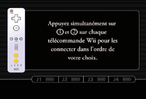

4 |
Utilisation de la manette |
 |


Note: si le guide de votre dragonne est muni d’un levier, abaissez-le jusqu’à ce que vous entendiez un clic. Cela permettra au guide de rester en place.
Cette procédure permet à la télécommande Wii de communiquer avec la console. La télécommande Wii fournie avec la console Wii a déjà été synchronisée avec celle-ci. Il existe deux modes de synchronisation différents. Mode standard – La procédure de synchronisation en mode standard sert à ajouter d’autres télécommandes Wii à votre console ou à effectuer une nouvelle synchronisation de votre télécommande Wii. Une fois synchronisée, la télécommande Wii le restera à moins que vous ne modifiiez cette configuration en la synchronisant avec une autre console. Mode temporaire – Ce mode vous permet d’utiliser temporairement votre télécommande Wii sur une autre console et d’utiliser la télécommande Wii d’un ami avec votre console. Il n’efface pas le mode standard sauvegardé dans la télécommande Wii. Dans ce mode, la télécommande Wii communique avec la console tant que celle-ci reste allumée. La synchronisation est perdue une fois que la console est éteinte. Note: seule une télécommande Wii en mode standard peut allumer ou éteindre la console. Synchronisation en mode standard Note: assurez-vous que des piles sont insérées dans la télécommande Wii.
 Cette procédure doit être effectuée à chaque fois que vous ajoutez une télécommande Wii à votre console. Note: le nombre de témoins qui clignotent change en fonction de l’état des piles.
Synchronisation en mode temporaire Note: ce mode vous permet d’annuler temporairement la configuration en mode standard de toutes les télécommandes Wii tant que la console reste allumée. Une fois la console rallumée, les télécommandes Wii fonctionneront en mode standard.

IMPORTANT: si votre télécommande Wii perd la synchronisation avec la console et que vous n’arrivez plus à les synchroniser, veuillez vous référer à la section "En cas de problèmes" concernant la télécommande Wii du mode d’emploi Wii – Installation de la console.
Si le Stick directionnel du Nunchuk n'est pas en position neutre (voir ci-dessous) lorsque vous allumez la console ou connectez le Nunchuk à la télécommande Wii, cette position deviendra la nouvelle position neutre et entraînera des problèmes de contrôle durant vos parties. Pour réinitialiser la position neutre du Nunchuk, procédez comme suit.

Position neutre La position neutre désigne la position du Stick directionnel quand celui-ci n’est pas incliné.
|
 sur la télécommande Wii synchronisée à la console.
sur la télécommande Wii synchronisée à la console.
 et
et  sur les télécommandes Wii dont vous souhaitez modifier l’ordre, l’une après l’autre. Dans les parties en multijoueur, l’ordre des joueurs est déterminé par l’ordre dans lequel les télécommandes Wii ont été synchronisées.
sur les télécommandes Wii dont vous souhaitez modifier l’ordre, l’une après l’autre. Dans les parties en multijoueur, l’ordre des joueurs est déterminé par l’ordre dans lequel les télécommandes Wii ont été synchronisées.
 ,
,  ,
,  et
et  sur la télécommande Wii pendant trois secondes.
sur la télécommande Wii pendant trois secondes. |
 |
 |